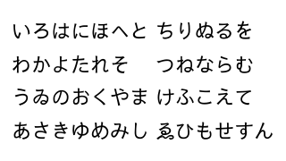
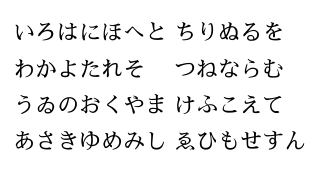

About Sawarabi Fonts
Sawarabi Fonts is a Japanese font family which contains two fonts, gothic and mincho. Sawarabi Gothic is a ‘Japanese gothic’ font, which is similar to sans-serif. Sawarabi Mincho is a ‘mincho’ font. ‘Mincho’ means a Ming typeface and is used like a serif font in Japan.
Sawarabi Gothic and Mincho are normal ordinary fonts and have not notable features. But it can be said that their design concept might be a little traditional (or old fashioned), if compared with VL Gothic (or M+ FONTS) which have already been popular as free Japanese fonts.
Though both of fonts are available, they have not yet enough characters for daily use, such as standard kanji, for being under developing now.
License
The license of Sawarabi Fonts is Creative Commons Attribution 3.0. You can see the content of this license on the following site:
Samples
Sawarabi Gothic (ver.20140415).

Sawarabi Mincho (ver.20140415).

Download
You can download the latest Sawarabi Fonts from the following links:
Check Sawarabi Gothic
In the following page, you can check design of Sawarabi Gothic by free typing.
The simple web application in this page requires JavaScript, and at the current version, it runs on the Mozilla Firefox, Safari and Google Chrome. I think that it can also run on the latest Internet Explorer, but you’ll not see fine results.
Links
- Sawarabi Fonts Project Top Page
-
The project site in SourceForge.JP. In wiki pages of it, you can get a little more information, but these might be written in Japanese.